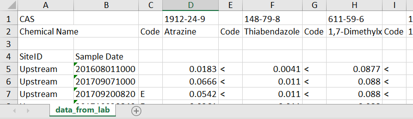

Using R to prepare your Excel file
03 March, 2023
pivot.RmdThis article will walk through prepping your data and exporting it to
a Microsoft™ Excel file using R. This article will focus on using
functions and techniques from the “tidyverse” collection of R packages
(dplyr + tidyr + many others…).
Pivot from wide to long
It is very common for environmental chemistry data to come back from
the laboratory in a “wide” format. A wide format typically has a few
“header” columns such as site and date with additional columns
representing a sigle chemical per column and possibly a remark code for
each chemical as a separate column. The remark column could indicate
censored data (ie “below detection limit”) or some information about the
sampling conditions. We can use the tidyr package to
“pivot” this data to the required long format used in
toxEval.
Let’s start with the most simple case, a wide data frame with no remark codes. In this simple example, column “a” represents the measured value of “a” and column “b” represents the measured value of “b”:
df_simple <- data.frame(
site = c("A","A","B","B"),
date = as.Date(Sys.Date():(Sys.Date()-3),
origin = "1970-01-01"),
a = c(1:4),
b = c(4:1),
stringsAsFactors = FALSE
)
df_simple## site date a b
## 1 A 2023-03-03 1 4
## 2 A 2023-03-02 2 3
## 3 B 2023-03-01 3 2
## 4 B 2023-02-28 4 1The “long” version of this data frame will still have the “site” and
“date” columns, but instead of “a”, “b” (and potentially many many
more…), it will now have “Chemical” and “Value”. To do this
programatically, we can use the pivot_longer function in
tidyr:
library(tidyr)
library(dplyr)
df_simple_long <- df_simple %>%
pivot_longer(cols = c(-site, -date),
names_to = "Chemical",
values_to = "Value")
head(df_simple_long)## # A tibble: 6 × 4
## site date Chemical Value
## <chr> <date> <chr> <int>
## 1 A 2023-03-03 a 1
## 2 A 2023-03-03 b 4
## 3 A 2023-03-02 a 2
## 4 A 2023-03-02 b 3
## 5 B 2023-03-01 a 3
## 6 B 2023-03-01 b 2The “names_to” argument is the name given to the column that is populated from the wide column names (so, the chemical names). The “values_to” is the column name for the values populated from the chemical columns.
Let’s make a more complicated wide data that now has the “a” and “b” measured values, but also has “a” and “b” remark codes:
df_with_rmks <- data.frame(
site = c("A","A","B","B"),
date = as.Date(Sys.Date():(Sys.Date()-3),
origin = "1970-01-01"),
a_value = c(1:4),
a_rmk = c("<","","",""),
b_value = c(4:1),
b_rmk = c("","","","<"),
stringsAsFactors = FALSE
)
df_with_rmks## site date a_value a_rmk b_value b_rmk
## 1 A 2023-03-03 1 < 4
## 2 A 2023-03-02 2 3
## 3 B 2023-03-01 3 2
## 4 B 2023-02-28 4 1 <We can use the “pivot_longer” function again to make this into a long data frame with the columns: site, date, Chemical, value, remark:
library(tidyr)
df_long_with_rmks <- df_with_rmks %>%
pivot_longer(cols = c(-site, -date),
names_to = c("Chemical", ".value"),
names_pattern = "(.+)_(.+)")
head(df_long_with_rmks)## # A tibble: 6 × 5
## site date Chemical value rmk
## <chr> <date> <chr> <int> <chr>
## 1 A 2023-03-03 a 1 "<"
## 2 A 2023-03-03 b 4 ""
## 3 A 2023-03-02 a 2 ""
## 4 A 2023-03-02 b 3 ""
## 5 B 2023-03-01 a 3 ""
## 6 B 2023-03-01 b 2 ""This time, the “names_to” argument is a vector. Since it’s going to
produce more than a simple name/value combination, we need to tell it
how to make the name/value/remark combinations. We do that using the
“names_pattern” argument. In this case, tidyr is going to
look at the column names (excluding site and date…since we negate those
in the “cols” argument), and try to split the names by the “_”
separator. This is a very powerful tool…in this case we are saying
anything in the first group (on the left of the “_”) is the “Chemical”
and every matching group on the right of the “_” creates new value
columns. So with the columns are: a_value, a_rmk, b_value, b_rmk - we
get a column of chemicals (a & b), a column of “rmk” values, and a
column of “value” values.
What if the column names didn’t have the “_value” prepended? This is more common in our raw data:
data_example2 <- data.frame(
site = c("A","A","B","B"),
date = as.Date(Sys.Date():(Sys.Date()-3),
origin = "1970-01-01"),
a = c(1:4),
a_rmk = c("<","","",""),
b = c(4:1),
b_rmk = c("","","","<"),
c = c(3:6),
c_rmk = rep("",4),
stringsAsFactors = FALSE
)
data_example2## site date a a_rmk b b_rmk c c_rmk
## 1 A 2023-03-03 1 < 4 3
## 2 A 2023-03-02 2 3 4
## 3 B 2023-03-01 3 2 5
## 4 B 2023-02-28 4 1 < 6The easiest way to do that would be to add that “_value”. Keeping in the “tidyverse” (acknowledging there are other base-R ways that work well too for the column renames):
library(dplyr)
data_wide2 <- data_example2 %>%
rename_if(!grepl("_rmk", names(.)) &
names(.) != c("site","date"),
list(~ sprintf('%s_value', .))) %>%
pivot_longer(cols = c(-site, -date),
names_to = c("Chemical", ".value"),
names_pattern = "(.+)_(.+)")
head(data_wide2)## # A tibble: 6 × 5
## site date Chemical value rmk
## <chr> <date> <chr> <int> <chr>
## 1 A 2023-03-03 a 1 "<"
## 2 A 2023-03-03 b 4 ""
## 3 A 2023-03-03 c 3 ""
## 4 A 2023-03-02 a 2 ""
## 5 A 2023-03-02 b 3 ""
## 6 A 2023-03-02 c 4 ""Opening the file
To open an Excel file in R, use the readxl package.
There are many different configurations of Excel files possible.
As one example, let’s say the lab returned the data looking like this:

Let’s break down the issues:
- Top row contains the CAS
- 2nd row basically contains the useful column headers
- Need to skip a random 3rd row
- 4th row has 2 column headers for the first 2 columns
- The data starts in row 5, in a “wide” format
- The date format is unusual
In this example, we’ll work through these spacing and header issues to get us to a wide data frame that we can then pivot to a long data frame as described in the next section.
First, let’s just get the data with no column names:
library(readxl)
data_no_header <- read_xlsx(here::here("vignettes/Wide data example.xlsx"),
sheet = "data_from_lab",
skip = 4, col_names = FALSE)data_no_header is now a data frame with accurate types
(except for dates…we’ll get that later!), but no column names. We know
the first 2 columns are site and date, so we can name those easily:
Now we need to get the CAS values for the column names:
headers <- read_xlsx(here::here("vignettes/Wide data example.xlsx"),
sheet = "data_from_lab",
n_max = 1)
# Get rid or first 2 columns:
headers <- headers[,-1:-2]
# Let's look at the first 6 columns:
headers[1,1:6]## # A tibble: 1 × 6
## ...3 `1912-24-9` ...5 `148-79-8` ...7 `611-59-6`
## <chr> <chr> <chr> <chr> <chr> <chr>
## 1 Code Atrazine Code Thiabendazole Code 1,7-DimethylxanthineIt would be nice to use the first row as the column names in “data_no_header”, but then it would be very confusing what “Code” means (since it’s repeated). So, let’s remove the “Code”, and just repeat the chemical names:
headers <- headers[,which(as.character(headers[1,]) != "Code")]
chem_names <- as.character(headers[1,])
column_names <- rep(chem_names, each = 2)
column_names <- paste0(column_names, c("_code","_Value"))
head(column_names)## [1] "Atrazine_code" "Atrazine_Value"
## [3] "Thiabendazole_code" "Thiabendazole_Value"
## [5] "1,7-Dimethylxanthine_code" "1,7-Dimethylxanthine_Value"Now, we can assign the “column_names” to the “data_no_header”:
names(data_no_header)[-1:-2] <- column_namesBefore we pivot this data to the required long format (as described above), let’s transform the “Sample Date” column to an R date time format:
data_no_header$`Sample Date` <- as.POSIXct(data_no_header$`Sample Date`,
format = "%Y%m%d%H%M")Now let’s pivot this to the long format:
cleaned_long <- data_no_header %>%
pivot_longer(cols = c(-SiteID, -`Sample Date`),
names_to = c("Chemical", ".value"),
names_pattern = "(.+)_(.+)") But, since we’re doing a toxEval analysis, we need to
get a “CAS” column. We can use the original “headers” data frame and do
a left_join (from the “dplyr” package):
cas_df <- data.frame(Chemical = as.character(headers[1,]),
CAS = names(headers),
stringsAsFactors = FALSE)
cleaned_long <- cleaned_long %>%
left_join(cas_df, by = "Chemical")
head(cleaned_long)## # A tibble: 6 × 6
## SiteID `Sample Date` Chemical code Value CAS
## <chr> <dttm> <chr> <chr> <dbl> <chr>
## 1 Upstream 2016-08-01 10:00:00 Atrazine NA 0.0183 1912-24-9
## 2 Upstream 2016-08-01 10:00:00 Thiabendazole < 0.0041 148-79-8
## 3 Upstream 2016-08-01 10:00:00 1,7-Dimethylxanthine < 0.0877 611-59-6
## 4 Upstream 2016-08-01 10:00:00 10-Hydroxy-amitriptyline < 0.0083 1159-82-6
## 5 Upstream 2017-09-07 10:00:00 Atrazine NA 0.0666 1912-24-9
## 6 Upstream 2017-09-07 10:00:00 Thiabendazole < 0.011 148-79-8The “cleaned_long” data frame is ready to be used by
toxEval in the “Data” tab. The “cas_df” is nearly ready for
the “Chemical” tab. There is a mandatory “Class” column that needs to be
added after exporting to Excel. Finally, we need to create the “Sites”
tab.
Save to Excel
The package openxlsx can be used to export Excel files.
Create a named list in R, and each of those parts of the list become a
Worksheet in Excel:
to_Excel <- list(Data = cleaned_long,
Chemicals = chemical_tab,
Sites = sites_tab)
library(openxlsx)
write.xlsx(to_Excel,
file = "toxEval_Input.xlsx")Disclaimer
This information is preliminary or provisional and is subject to revision. It is being provided to meet the need for timely best science. The information has not received final approval by the U.S. Geological Survey (USGS) and is provided on the condition that neither the USGS nor the U.S. Government shall be held liable for any damages resulting from the authorized or unauthorized use of the information.
Any use of trade, firm, or product names is for descriptive purposes only and does not imply endorsement by the U.S. Government.